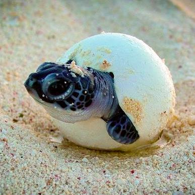
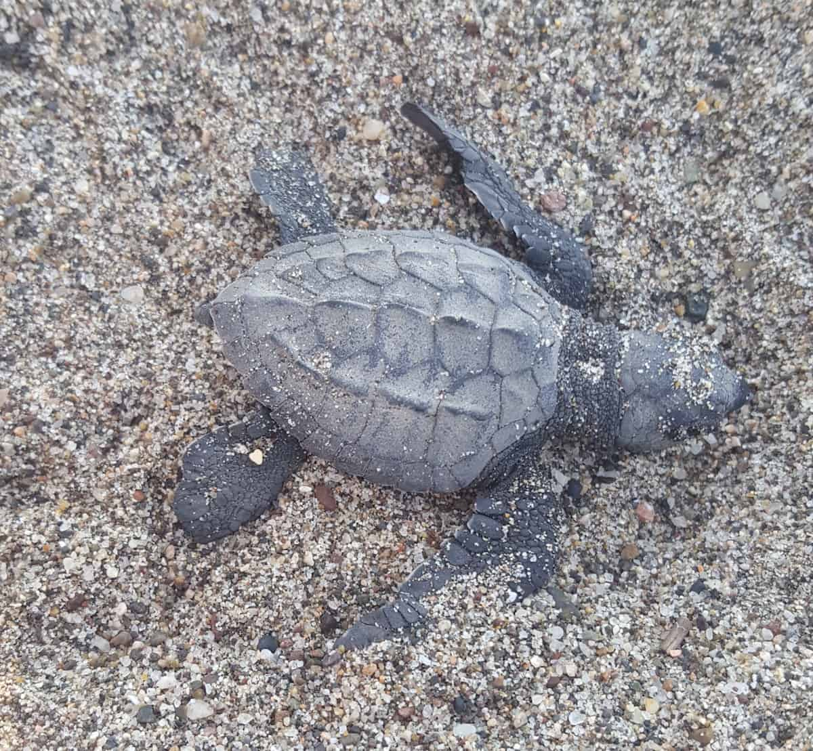
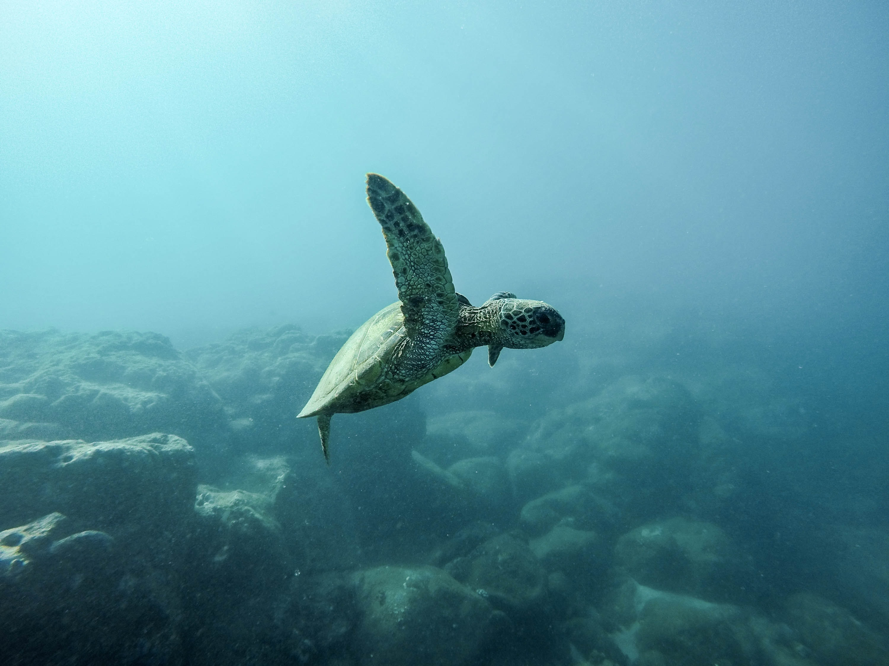
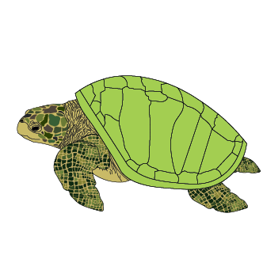

Storyboard: The world is your fishbowl: A story about the life of a sea turtle

First scene: After roughly 45-70 days of incubation:

1. “Congratulations you are a loggerhead sea turtle! You are lucky and hatched at the right time at night. Unfortunately, our brothers and sisters were not so lucky. During the daytime, an umbrella was jabbed into the sand where your brothers and sisters were.”
2. “Unfortunately, the vibrations from the beach goers caused you to hatch earlier and you died of dehydration because you couldn’t get out of the nest due to vehicles driving on the beach that altered the depth of the nest. Please try again”
Second scene: you make your way to the ocean using the brightest point of the horizon.

1. “You followed your instincts and found your way to the ocean!”
2. “Although you tried your best to follow your instincts, you got confused by the hotel lights and made your way towards human infrastructures instead and died. Please try again.”
Third scene: “Lost years” you have successfully made it to the ocean. At this stage you aimlessly migrate and feed on planktonic invertebrates on surface water for the first few years of your life.

1. “You happen to be lucky and see a nearby sea turtle getting caught in a fishing net and end up drowning. BUT you learned from that sea turtle’s mistake and steered clear of the net.”

2. “Unfortunately, while moving along with the ocean’s current, you find yourself getting caught up with a motorboat’s propeller and end up dead. Please try again.”
Fourth scene: After a few years have passed, you migrate to nearshore to continue to mature.

1. “While you make your way to nearshore, you encounter a natural predator–—a shark, maybe. You weren’t sure as you were too busy swimming away. Your cautiousness saved your life.”

2. “As you made your way to nearshore, you got hungry and saw a jellyfish. BUT you saw wrong, it was really a plastic bag that you ate. After years of mistaking plastic bags for jellyfish, your body gave up and couldn’t digest this latest mistake. You ended up dying. Your body washed up to the shore filled with plastic bags. Please try again.”

Fifth scene: After you became an adult, you thought that it was time to make your mark on this world and head to the adult foraging area.
1. “As you were heading to the foraging area, you encountered some poachers. You tried your best to get away from them and you SUCCEEDED!”
2. “As you were heading to the foraging area, you encountered some poachers. You tried your best to get away from them and unfortunately DID NOT succeed. You were exploited for your meat and shell for a lot of money. Your meat is a delicacy and your shell becomes jewelry. Please try again.”
Sixth scene: You make it to the foraging area and start to breed with other turtles.
1. “You and another turtle found each other and successfully mated. But others were not so lucky.”
2. “You and another turtle found each other, but another turtle was fighting to take the male turtle off of you as you guys were mating. You are also almost out of breath, so you tried to swim up, but the weight of two turtles is preventing you from swimming up and you end up drowning and sinking to the ocean floor. Please try again!”
Seventh scene: You make your way back to the place that you hatched in and start to dig a hole and lay your eggs.

1. You successfully laid your eggs alongside the other sea turtles. Your eggs are healthy.
2. Unfortunately you contract a fungal disease and none of the eggs that you laid hatched. Fusarium solani species complex caused your embryos to die.
Congratulations for making it this far! You go back into the ocean and migrate aimlessly until mating season again for the rest of your life and hope you are lucky enough to stay alive and die of old age!
